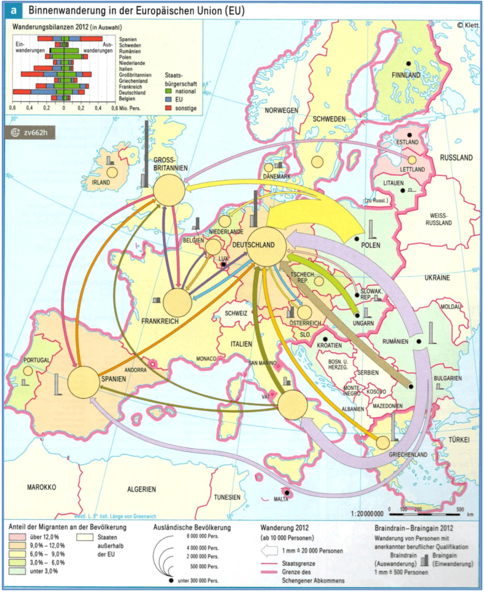
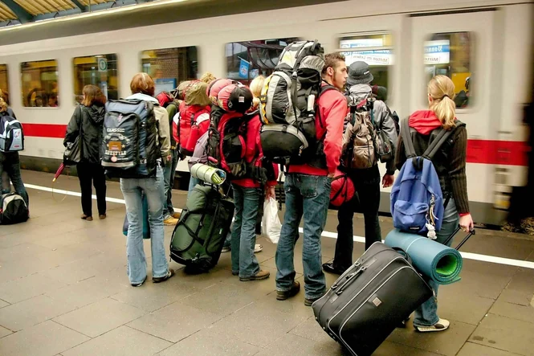

Geographie | Klasse 10


Jeder Unionsbürger hat das Recht, ohne Visum in die Mitgliedstaaten der EU, des EWR und die Schweiz einzureisen.
"Unionsbürger haben auch das Recht, sich nahezu ohne Beschränkungen und ohne besondere Erlaubnis in den anderen Staaten aufzuhalten und dort erwerbstätig zu sein. Sie werden dabei in fast jeder Hinsicht den Staatsangehörigen des anderen Staates rechtlich gleichgestellt. Dieses Recht bezeichnet man als Freizügigkeit. Unionsbürger müssen im Besitz eines gültigen Personalausweises oder Reisepasses sein, um ihr Freizügigkeitsrecht nachzuweisen.
Das Recht auf Freizügigkeit besteht nur dann nicht, wenn sie sich länger als drei Monate und kürzer als fünf Jahre in einem anderen Staat aufhalten, dort nicht erwerbstätig sind, auch keine Aussicht auf eine Erwerbstätigkeit haben und zudem nicht in der Lage sind, sich und ihre Familienangehörigen zu unterhalten.
Das Recht zum Aufenthalt von mehr als drei Monaten genießen Unionsbürger also, umgekehrt ausgedrückt, wenn eine der folgenden Voraussetzungen des Aufenthalts im anderen Staat erfüllt ist:
(Quelle: BMI, https://www.bmi.bund.de/DE/themen/migration/aufenthaltsrecht/freizuegigkeit-eu-buerger/freizuegigkeit-eu-buerger-node.html)
Anteil der im EU-Ausland lebenden Bürgerinnen und Bürger an der Gesamtzahl der EU-Bürger
Wanderungssaldo (nur ausländische Staatsbürger), Personen in 1.000